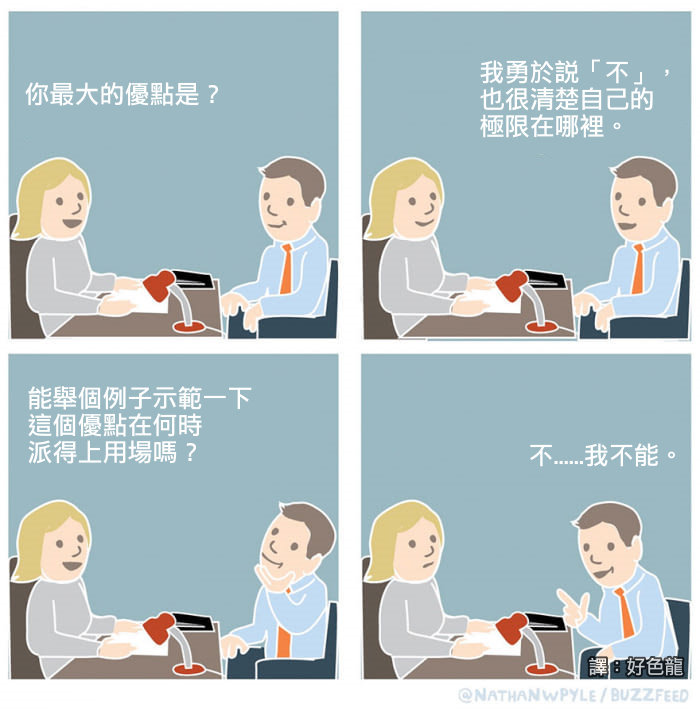

R homework
圖資二 B07106014 劉育致
寫到這裡的時候，赫然發現，系級寫錯了，立刻地改正。不免讓人擔心，之前的作業時否也犯了相同的錯， 畢竟對於大學生而言，時間感實在太稀薄，常常忘記星期幾、年級這些小事。 又擔心起其他所有需要寫上系級的事，是否正確無誤，像是：
作業
簽到表
期中考卷
這麼說有點不合時宜，不過這是
紅色
另一篇html
最後，為了放張照片，又好像不能侵害版權的樣子，所以我想放meme之類的應該不會出事吧。 最困難的部分大概是調照片的長寬，讓它不會占版面，又不會糊的像燕麥粥一樣。 